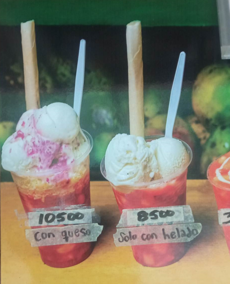

"En la semana para sorpresa de muchos los Banana Slipt han
sorprendido a una gran cantidad de clientes con su sabor exquisito y
dulzura.
durante la tarde del lunes han sido uno de los postres mas
solicitados y los que mas buenas criticas han recivido por su buena
preparacion y combinacion de sabores de helado y fruta".
"Los sanduches se han vuelto aun mas popules desde el comienzo del verano, sobretodo el sanduche ranchero, el cual es el favorito de la mayoria de los clientes"

"Los salpines siempre han sido un producto amado por la mayoria de clientes, los cuales la mayoria de estos les encanta el salpicon con doble porcion de helado"
"La ensalada de frutas y helado mejoro bastante las ventas del negocio al usar helado y queso "
"Cada jugo natural tiene un sabor sin igual , pero el jugo natural que mas han pedido esta ultima semana es el jugo de mora en leche"
"Los clientes no solo han comprado jugos naturales, tambien compran frutas para alimentarse saludablemente"